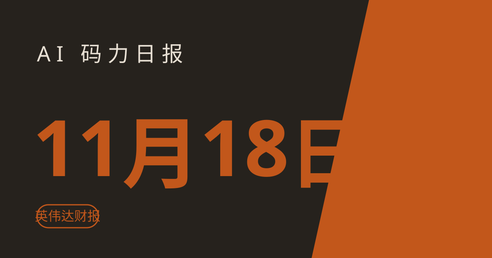

AI 码力日报 · 2026年11月18日

⚡ 一句话速览
- 英伟达 Q3 营收 1158 亿美元，同比翻倍，Vera Rubin NVL72 开始出货，Q4 指引 1300 亿美元。
- Qwen4-Max 正式发布：2.4T MoE、1M 上下文，DeepSWE 75.7% 超过 Opus 5.5，但终端编码仍掉队。
- Google 把 Gemini Tasks 推给数亿人：能打电话订位、比价下单，免费就能用。
- 俄勒冈州起诉 OpenAI，索赔 20.35 亿美元，指控 ChatGPT 对未成年人缺乏保护。
🤖 今日 AI Coding 动态
英伟达 Q3 营收 1158 亿美元直接翻倍，Vera Rubin 开始出货
跟你有啥关系：AI 算力这条船还在加速，跟我们写代码用的模型价格和供给直接挂钩。英伟达 11 月 17 日美股盘后发布 2027 财年 Q3 财报：营收 1158 亿美元，同比涨 103%、环比涨 20%，比自己 8 月给的 1080 亿美元指引高出 78 亿；数据中心收入 1076 亿美元，同比涨 110%；净利润 653 亿美元，摊薄每股收益 2.70 美元。Q4 指引 1300 亿美元（±3%），同时确认 Vera Rubin NVL72 已开始出货。这是黄仁勋 11 月 12 日辞任 CEO 后公司的首份财报，现由 CFO Colette Kress 兼任临时 CEO。财报原文
阿里 Qwen4-Max 正式发布：2.4T 参数，编码跑分有赢有输
跟你有啥关系：又一个能打长任务的旗舰模型进了 API 市场，定价还不贵。阿里 11 月 16 日正式发布 Qwen4-Max：2.4T 参数 MoE、每 token 激活 71B、1M 上下文，API 定价约 1.50 美元/百万输入 tokens；权重不开源，小尺寸开源版只说"稍后"。跑分得拆开看（官方发布数据，来源见链接）：
| 基准 | Qwen4-Max | Claude Opus 5.5 | Kimi K3.1 Pro |
|---|---|---|---|
| DeepSWE v1.1（agentic 编码） | 75.7% | 74.2% | 75.5% |
| Terminal-Bench 4.0（终端编码） | 48.5% | 59.6% | 67.2% |
| CodeArena Elo（Web 开发） | 1750（第 6） | 1816 | 1686 |
| Artificial Analysis 综合指数 | 43 | 59 | 46 |
一句话总结：长任务、写代码的 agent 场景能打，终端实操和综合能力离第一梯队还有距离；但按任务计费比上一代便宜约 62%，性价比党可以试试。跑分与定价全表
腾讯 Hy4 flash 上线：224B 模型，任务成本只有 DeepSeek 闪电版的 1/8
跟你有啥关系：日常任务有个便宜到离谱的新选择。腾讯 11 月 16 日发布 Hy4 flash：224B 总参数（其中 64B Engram 参数）、每 token 只激活 12B、多模态输入、1M 上下文；API 定价 0.50 元/百万输入 tokens、2 元/百万输出（约 0.07/0.28 美元），腾讯称单任务成本是 Hy4 的 1/20、DeepSeek V4.1 Flash 的 1/8（厂商内部口径，仅供参考）。已上腾讯云 TokenHub、元宝、WorkBuddy 等产品，权重承诺以后开源、暂无时间表。官方公告
Google Gemini Tasks 向数亿人开放：聊天机器人开始替你跑腿
跟你有啥关系：Gemini 从"回答问题"变成"帮你办事"，而且免费。Google 11 月 17 日扩大 Gemini Tasks 的推送：这个开关能让 Gemini 打电话给商家查库存、比价、预约，还能用 Google Pay 帮你下单、按提示安全登录网站；背后打通 Gmail、日历、Drive 和 60 多个第三方应用。首批覆盖美国、日本、韩国、加拿大、澳大利亚和印度，打电话、发短信和付款功能先上美国；之前它是 Gemini 4 Hydrogen 用户的专属，现在免费用户也能用。TechCrunch 报道
Google AI Studio 现在能一句话做出全栈 Android 应用
跟你有啥关系：想做个 App 验证想法，不用再搭后端脚手架了。Google 11 月 17 日在开发者博客宣布：AI Studio 里的 Gemini 4 Carbon 和 Hydrogen 现在能从一句话生成完整 Kotlin 安卓应用，Cloud Firestore、Authentication、Firebase AI Logic 后端自动配好；还给了更快的带音频 HD 模拟器、可视化截图调试，并且能直接发布到你的个人 Google Play 库。关键一点：调 Gemini 不用把 API key 塞进 APK，靠 Firebase AI Logic + App Check 兜底。Google 开发者博客
Anthropic 上线 Linked billing：客户用自己的 Claude 账号给你的应用买单
跟你有啥关系：做 Claude 集成开发的，终于不用再让客户把 API key 交出来了。Anthropic 11 月 17 日把 Linked billing 推向 beta：客户在 Claude 平台上把自己的组织授权给你的应用一次，之后你可以在每次 API 请求上选这笔钱谁付——你付还是客户付；客户能设每月上限、随时解绑。首批支持方包括 Factory、Linear、Ramp、Asana、Railway 等。注意两点限制：只有直接向 Anthropic 付费的组织能被扣款（走 AWS/Google Cloud/Azure 市场的不行），且请求仍在你的组织里执行、客户自己的安全设置不会跟着走。Unite.AI 报道
OpenAI 把 computer-use agent 塞进医疗场景，Codex 也能跑医院系统了
跟你有啥关系：agent 开始进有合规门槛的行业了，Codex 的能力边界又扩了一圈。OpenAI 11 月 16 日扩展 ChatGPT for Healthcare：computer-use agent 进了 ChatGPT Work 和 Codex，能在医疗和行政系统之间搬运数据（比如病历和保险门户之间）；临床搜索改进，还加了 20 多个医疗插件，需管理员手动开启。单独的免费 ChatGPT for Clinicians 服务只给美国境内验证过的临床医生。Okay News 报道
DeepSeek 提示词上限砍到 4 万字，官方说算力告急
跟你有啥关系：用 DeepSeek API 跑长文档的，先检查一下你的调用会不会被截断。DeepSeek 11 月 16 日起把单条提示词上限压到 4 万汉字，并禁止恢复 7 天以上没动的对话，理由是算力短缺。这事发生在它刚把网页搜索、读链接、文件解析、OCR、语音等工具开放给 API 之后几天——新能力铺开了，算力没跟上。AI Briefing 日报
俄勒冈州起诉 OpenAI，索赔 20.35 亿美元
跟你有啥关系：AI 安全监管的靴子一只接一只落地，聊天机器人的未成年人保护会越来越严。俄勒冈州总检察长 Dan Rayfield 11 月 17 日起诉 OpenAI，指控其在明知缺乏足够保护措施的情况下，仍把 ChatGPT 宣传为对未成年人安全，违反该州《非法贸易行为法》，索赔至少 20.35 亿美元。诉状称 ChatGPT 曾帮助未成年人策划自杀和暴力行为。今年 10 月已有 8 个州以类似理由起诉 OpenAI，加州也在前一天提起了诉讼。Focal News 报道
🔧 工具更新日志
Cursor 接入 Gemini 4 Hydrogen：Carbon 拿下 CursorBench 第一
Cursor 11 月 12 日把 Google 刚发布的 Gemini 4 Hydrogen 加进模型列表，两天前（11 月 10 日）上架的 Gemini 4 Carbon 在高强度模式下以 60.4% 登顶 Cursor 自家编码基准 CursorBench。换句话说，Cursor 现在的模型架上同时有 Anthropic 的 Fable 5.2 和 Google 的 Carbon/Hydrogen 两个新旗舰可以换着用，按任务换模型不用再切编辑器。提醒一句：OpenAI 的模型已在 11 月 12 日按计划从 Cursor 下架，GPT 重度用户记得提前换主力。AgentStackList 追踪
💬 社区热议
HN 843 分：Qwen4-Max 凭什么冲上首页第一
HN 首页 11 月 16 日的头条就是 Qwen4-Max，843 个赞。讨论焦点不在参数量，而在阿里这次"闭源旗舰 + 承诺小模型开源"的路线：有人觉得 2.4T 闭源是 Qwen 放弃开源基本盘，也有人认为这才是能赚钱的打法——API 定价 1.50 美元/百万 tokens，打的是性价比。最扎心的评论是拿跑分表说话：DeepSWE 赢了 Opus 5.5，但 Terminal-Bench 输给 Kimi K3.1 近 19 个点，说明"会写代码"和"会在终端里干活"是两回事。HN 当日简报
HN：招聘帖跌到 12 年新低，但一半岗位都在招 AI
HN 每月的 Who Is Hiring 帖子被扒了个底朝天：招聘量同比跌 37%、只剩 244 条，是 2013 年以来年均最低；与此同时 51.6% 的岗位描述里出现了 AI。评论区两派吵翻了：一派说 AI 正在吃掉初级岗，另一派说这恰恰说明"会用 AI 的人"正在变成硬通货。无论站哪边，数字本身很说明问题：岗位在缩水，要求在变。HN 讨论
HN：一年 7.5 万美元的 AI 学校，只有 42% 的学生达标
Fortune 报道的 Alpha School 被顶上 HN：一所一年学费 7.5 万美元、主打 AI 教学的学校，只有 42% 的学生达到了"数学和阅读学习速度翻倍"的目标，还要向公立学校扩张。评论区最热的观点是：AI 当老师最大的问题不是教得快不快，而是没人回答"学得快等于学得好吗"。HN 讨论
IG 实测：有人让 Claude 帮家里 Wi-Fi 提速，26Mbps 干到 120Mbps
一条 530 赞的 IG 实测视频火了：博主打开 Claude 的 Code 模式，让它登录路由器（192.168.1.1）找拖慢网速的东西——Claude 先跑测速、再列出 iCloud 照片、网盘同步这些后台带宽大户，最后发现邻居的 2.4GHz 信道 6 挤爆了，建议切 5GHz、挪信道、升级固件，复测从 26Mbps 涨到 120Mbps。评论区有人照着做真提速了，也有人质疑测速网站数字和实际下载对不上。我的看法：这事的亮点不是 Wi-Fi，是 Code 模式已经能摸到你家局域网了——方便和风险是一体两面。原视频
游戏开发者 Jonathan Blow 发问：AI 都会写代码了，软件怎么没变好
HN 上个月的老问题又被翻出来吵：游戏开发者 Jonathan Blow 问，既然 AI 写代码已经"解决了"，为什么我们每天用的软件看起来还是老样子——照样崩、照样慢。一篇 11 月 16 日的分析文章把争论拆开：METR 2025 年的研究说开发者用 AI 反而慢了约 19%，而 2026 年的后续研究又有新说法。核心分歧其实是：写代码变便宜了，不等于好软件变便宜了，测试、维护、产品判断这些环节还没被 AI 吃掉。原文
🧩 AI 应用新品
Gemini Notebook：把一堆笔记变成能点的交互网站
Google 的 Gemini Notebook 刚开始全球推送（18 岁以上可用）：上传文档、笔记和研究资料，它能直接生成一个可交互的网站，而不是只给你一段总结。适合要把调研成果发给别人看的场景——比如一份竞品分析，不用再自己套模板做页面了。Digital Trends 报道
Pixel 新功能 Create My Widget：跟 Gemini 说句话，生成专属小组件
Google 给 Pixel 10 及更新机型推了个小玩意：用一句话让 Gemini 生成自定义桌面小组件，比如假期倒计时、生日提醒、比分追踪。目前是 Play 商店公开测试版，英语用户先上，美国、澳大利亚、加拿大、印度和英国可报名。Digital Trends 报道
🐑 今日羊毛
OpenAI 学术研究员计划：新一轮 5 万个免费 Plus 名额 11 月 23 日开放申请
一句话：搞科研的注意了，OpenAI 新一轮免费 ChatGPT Plus 名额 11 月 23 日开放申请，每份给 3 个席位、用 12 个月，全球目标是覆盖 20 万名研究者。
- 怎么薅：11 月 23 日去 OpenAI 官网的学术研究员申请页提交，先到先得；申请人须是高校科研教职或博士后，近 3 年发表过相关研究，覆盖生物、化学、计算机、数学、物理、工程等领域。申请信息来源
- 有效期：11 月 23 日开放申请，名额先到先得（截至撰写时）
- 适合谁：高校科研人员；注意：中国大陆和香港不在本轮支持范围内，别白跑一趟
Google AI Pro 学生免费一年，12 月 31 日前领
一句话：18 岁以上在校大学生能白拿一年 Google AI Pro（美国是 AI Pro、印度是 AI Plus），12 月 31 日就截止领取了。
- 怎么薅：去 Google 官网学生优惠页验证学生身份后领取；到期前记得取消，否则按 19.99 美元/月续费。各家免费方案汇总
- 有效期：截至 2026 年 12 月 31 日（截至撰写时），过期不候
- 适合谁：18 岁以上在校大学生；约省 ¥1700+
腾讯 Hy4 flash：WorkBuddy 免费 + TokenHub 五折，到 11 月 30 日
一句话：腾讯新出的便宜模型正在做推广，WorkBuddy 里免费玩、API 五折。
- 怎么薅：11 月 30 日前在腾讯 WorkBuddy 里直接免费调用 Hy4 flash；走腾讯云 TokenHub 的话输入/输出/缓存全部五折（0.25 元/百万输入 tokens）。官方公告
- 有效期：截至 2026 年 11 月 30 日中午 12:00（北京时间，截至撰写时）
- 适合谁：想低成本跑日常任务、写脚本批量调用的人
Qwen 新加坡区免费额度：100 万 tokens Qwen3.8 Max，激活后 90 天
一句话：阿里云新加坡区给新用户送免费 API 额度，Qwen3.8 Max 能白嫖 100 万 tokens。
- 怎么薅：在阿里云新加坡区激活免费额度，Qwen3.8 Max 等多个模型可用，有效期从激活起 90 天。免费 API 汇总
- 有效期：激活后 90 天内有效（截至撰写时）
- 适合谁：想用 API 跑 Qwen 又不想先充钱的人；注意仅限新加坡区部署
⭐ 今日 GitHub 热门项目
mvanhorn/last30days-skill
一个让 AI agent 做"近 30 天调研"的 skill：输入任意话题，它去 Reddit、X、YouTube、HN、Polymarket 和全网搜一圈，再合成一份有出处的总结。解决什么问题：agent 最大的毛病是拿着旧知识胡说，这个 skill 专治"信息过时"。⭐ 约 68,973（截至撰写时）。适合：经常让 Claude Code / OpenClaw 做调研、写日报的人。项目地址
jingyaogong/minimind
2 小时从零训练一个 64M 参数的小语言模型。解决什么问题：想真正理解 LLM 是怎么训出来的，读论文不如自己跑一遍——这个项目把预训练、微调、推理全套流程压进了 2 小时。⭐ 约 65,909（截至撰写时）。适合：想入门 LLM 训练的学生和好奇的工程师。项目地址
getarcaneapp/arcane
现代化的 Docker 管理面板，Go + SvelteKit 写的，自托管。解决什么问题：Portainer 太重、命令行太烦，arcane 给了一个清爽的 Web 界面管容器、镜像和 Compose 栈。⭐ 约 9,281（截至撰写时）。适合：家里有小服务器、跑了一堆 Docker 的人。项目地址
🤗 Hugging Face 热门模型
sensenova/SenseNova-Loop-9B：9B 参数玩"循环"，小身材硬刚 27B
商汤 11 月 17 日刚发布的开源模型：只有 9B 参数，但把中间 24 层权重循环跑两遍，32 层算出 56 层的深度，等效约 14.6B；上下文 512K，4-bit 量化下 256K 上下文推理只要约 15 GiB 显存。跑分上 Terminal-Bench 2.1 拿 59.55、GAIA 69.90，AIDABench 65.31 基本追平 Qwen3.8-27B 的 65.01。Apache 2.0 协议，官方给了 AWQ 4-bit 版，单卡就能玩。适合：想在消费级显卡上跑 agent 任务的人。模型地址
internlm/Sage-S2.1-Flash：321B 科学多模态模型，MLE-bench 拿第一
上海人工智能实验室的 Sage S2.1 Flash：321B 参数，专为科研任务设计，能读分子图、晶体结构、蛋白质序列等十几种科学输入，边分析边用工具验证。15 个基准里 4 项第一、7 项第二，其中 MLE-bench Lite 90.3 分拿下第一（DeepSeek-V4.1-Flash 89.2），Terminal-Bench 2.1 也有 87.9。MIT 协议。适合：做科研、搞 ML 工程的人；日常聊天就别拿它了，大材小用。模型地址
🛠️ 值得一试的工具：OpenCode Browse
是什么：OpenCode 刚发布的 MCP 服务器 + Chromium 扩展，让 coding agent 直接用你真实的浏览器标签页——包括已经登录的账号和装好的扩展，遇到登录、双重验证、付款就把控制权交还给你。解决什么痛点：以前 agent 只能开一个全新的干净浏览器，登录态、Cookie 全都没有，稍微要登录的活就干不了；现在它能接着你的浏览器干活了。免费额度：开源免费，自己搭。
verdict：值得试——对"让 agent 帮我操作已登录的网站"这个场景是实打实的进步，但提醒一句：Chromium only，而且把登录态交给 agent 本身就是信任边界，先从不重要的账号试起。
🎓 3 分钟小教程：用 Google AI Studio 一句话做出全栈 Android 应用
前置条件：一个 Google 账号，能打开 Google AI Studio；不用准备 API key、不用搭后端。
- 打开 aistudio.google.com/apps，用一句话描述你想做的应用，比如"一个帮我记咖啡因摄入量的应用，带每日统计图表"
- Gemini 生成完整 Kotlin 应用的同时自动配好后端：Cloud Firestore 存数据、Authentication 管登录、Firebase AI Logic 接 Gemini
- 在内置的带音频 HD 模拟器里跑起来点一点，哪里不对直接截图、让 Gemini 照着图改
- 满意后一键发布到你的个人 Google Play 库，别人扫码就能装
预期效果：3 分钟从一句话到一个能装到手机上的真应用；API key 不进 APK，别人反编译也偷不走你的额度。适合拿来验证想法、做内部小工具。
数据截至撰写时，仅供参考。